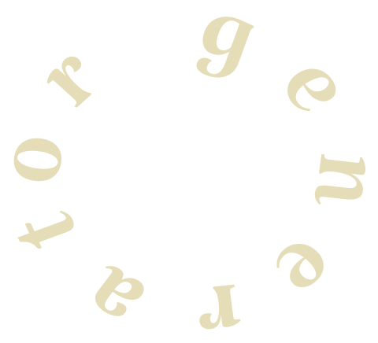

Unique
Piano
Generator
TRANSFORM YOUR ACOUSTIC PIANO TO A DIGITAL INSTRUMENT
YOU CREATE THE SOUND.
WE BUILD YOUR INSTRUMENT!
how it works how it works how it works how it works how it works how it works how it works how it works

01
Record
Record every key on your piano (A0-C8). Check complete sample guide below.

02
Upload
Upload your samples. No coding needed.

03
Customize
Add a name, image and a your pianos unique character to your instrument.

04
Generate
We take care of the programming - you get a .dspreset .zip file for DecentSampler.

05
Done
Download your unique piano and start playing in your DAW.

Compatibility
The Unique Piano Generator works with .wav .aiff . flac and .alac Your Unique Digital Piano are only compatible with DesentSampler.
watch recording guide watch recording guide watch recording guide watch recording guide watch recording guide watch recording guide watch recording guide watch recording guide
